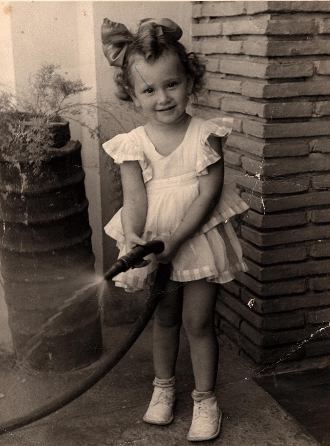
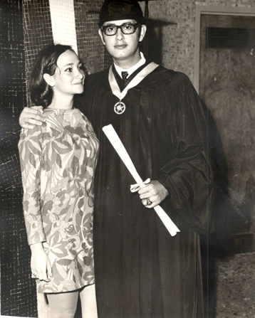
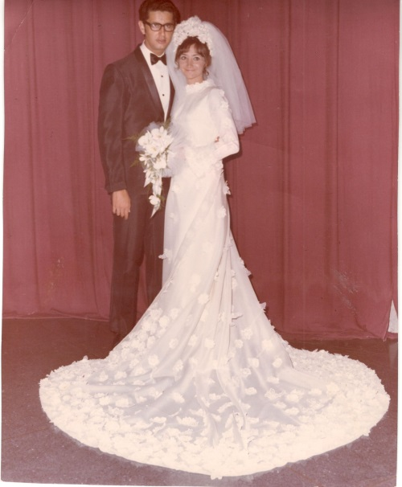
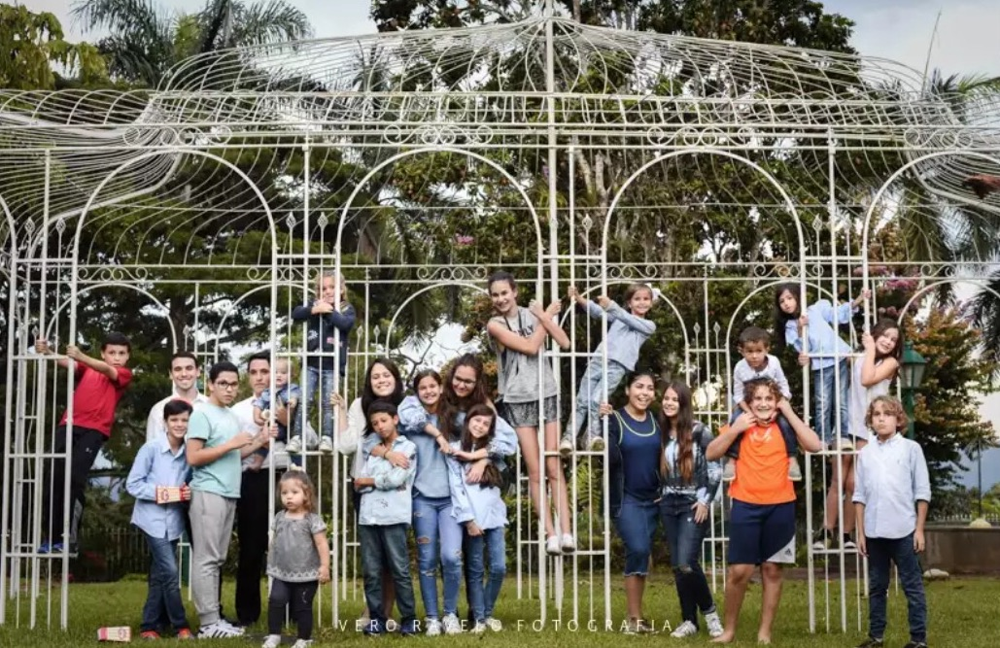

Mi
abuela, Elena Hartman Weisz
 Mi
abuela Elena nació en la ciudad de Caracas, Venezuela en el Centro
Médico, el 15 de octubre de 1947, ella vivía junto a sus
padres Paul Hartman y Magda Weisz y sus hermanas Vicky y Verónica,
en un apartamento alquilado en Chacao. A los 3 años se muda a
los Estados Unidos y ahí nace su hermana Vicky. Vuelven a Venezuela.Al cumplir los 5 su mamá decide mudarse a Miami donde miabuela
vivió los siguientes 2 años. Vivían en Miami Beach. Mi abuela
recuerda que mi bisabuela en esa época trabajaba como mesonera y mi
bisabuelo no vivía con ellas ya que se había quedado en Venezuela.
Recuerda ir a la playa muy seguido y a Lincon Road de paseo y de ir
al cine y quedarse ahí viendo 2 o 3 películas seguidas, eso sí mi
bisabuela les llevaba la comida, pues no tenían plata para comprarla
allí.
Mi
abuela Elena nació en la ciudad de Caracas, Venezuela en el Centro
Médico, el 15 de octubre de 1947, ella vivía junto a sus
padres Paul Hartman y Magda Weisz y sus hermanas Vicky y Verónica,
en un apartamento alquilado en Chacao. A los 3 años se muda a
los Estados Unidos y ahí nace su hermana Vicky. Vuelven a Venezuela.Al cumplir los 5 su mamá decide mudarse a Miami donde miabuela
vivió los siguientes 2 años. Vivían en Miami Beach. Mi abuela
recuerda que mi bisabuela en esa época trabajaba como mesonera y mi
bisabuelo no vivía con ellas ya que se había quedado en Venezuela.
Recuerda ir a la playa muy seguido y a Lincon Road de paseo y de ir
al cine y quedarse ahí viendo 2 o 3 películas seguidas, eso sí mi
bisabuela les llevaba la comida, pues no tenían plata para comprarla
allí.

Después
de 2 años mi abuela vuelve y se muda a la urbanización de San
Bernardino.Esta urbanización era tranquila y muy agradable, ella me
cuenta que siempre caminaba para ir a casa de una amiga o
montando bicicleta, era la zona donde estaban concentrados la mayoría
de los judíos de la comunidad de Caracas.
La
comunidad judía era de aproximadamente 4 mil judíos la mayoría de
ellos vivía en apartamentos alquilados ya que en aquella época eran
pocos los apartamentos propios. La vida judía de la época era
agradable porque todos se conocían e iban a las mismas fiestas,
colegio y en algunos casos sinagoga. En casa de su mamá les hablaban
en húngaro y mi abuela y sus hermanas le contestaban en castellano y
con sus amistades hablaban en castellano, el hebreo e inglés
únicamente se escuchaba en el colegio debido a que estos eran parte
del pensum de la época. Estudiaba en el colegio Moral y Luces Herzl
Bialik, ella estudió ahí porque a sus padres les parecía
importante que sus hijas tuvieran una educación judía. El colegio
no era muy diferente a como es hoy día; muy sionista, salones de
niñas y varones juntos, contaban con uniforme; las hembras llevaban
blusa blanca y jumper azul marino y los varones un pantalón azul
marino y camisa blanca. El colegio estaba ubicado en la zona de San
Bernandino. Ella recibió una educación completa, el pensum se regía
por el dictado del Ministerio de Educación y las materias judaicas
seguidas por el reglamento de la institución. Los maestros eran de
nivel bastante alto muy calificado siempre entre los mejores colegios
del país, cuando un alumno tenía un mal comportamiento de acuerdo a
lo que hizo el castigo era expulsarlo por algunos días según la
gravedad del acto.

Ella
empezó en el colegio Moral y Luces Herzl Bialik cuando tenía 7 años
y a los 15 mi bisabuela la mandó a Detroit a vivir con su tío Emil
(hermano de mi bisabuela Magda). Ella vivió ahí por un año y
después se devolvió para Venezuela con su familia. Al volver la
inscribieron en el colegio americano de la Castellana donde cursó
sus últimos 2 años de bachillerato, mi abuela se graduó a los 17,
al graduarse tomó un cursos de secretaría y empezó a trabajar como
secretaria en la General Motors de Venezuela.

Como
anécdota especial recuerda la entrevista, y cuando la probaron para
ver qué tan rápido escribía a máquina, ella al arrimar el rollo
de la máquina para seguir escribiendo, botó el café del jefe.
Pensó que no la contratarían, sin embargo, quedaron muy
sorprendidos con ella, no sólo por sus destrezas como mecanógrafa,
sino por sus conocimientos del inglés (idioma que hablaba a la
perfección). Ella obtuvo el trabajo como secretaria del subgerente,
pera al poco tiempo la ascendieron como secretaria del Gerente
general de la compañía.
En
casa eran bastante estrictos con ellas, los niveles de disciplina
eran altos si no cumplían con algo recibían un castigo bastante
fuerte cosa que no ocurría a menudo debido a que eran bastante
tranquilas . En su casa eran kosher no se metía nada no kosher y
tenían vajillas separadas, no comían fuera de casa, debido a que su
madre provenía de una familia muy religiosa de Hungría, a pesar de
eso ella no era religiosa. A la hora de almuerzo en el colegio se
iban a sus casas a almorzar.
Sus
padres Paul y Magda asistían a la sinagoga a pie en las festividades
religiosas. En Shabat comían en casa y encendían las velas junto a
su mamá. Algunas veces cuando los invitaban a casas de amigos los
viernes, iban pero se aseguraban de llegar a casa temprano y luego en
casa se comían las comidas típicas húngaras según la festividad.
Los Bar Mitzvas eran muy sencillos al igual que las bodas de la época
que se hacían en las sinagogas. En su época existía la Unión
Israelita de Caracas, y la Asociación Israelita de Venezuela tal
como hoy día, la primera agrupaba a la comunidad esquenazi y la
segunda a la sefaradí y la B’nei Brit que se encargaba de dar
conferencias y formar grupos para unir a los jóvenes judíos,
ofrecían entretenimiento y actividades sionistas mi abuela asistía
los fines de semana a estos grupos de ahí conoce a mi abuelo Arie
Cohen.
En
las fiestas mi abuela Elena ayudaba a su mamá Magda a cocinar para
aprender de ella que cocinaba muy bien y todo lo que sabe de cocina
hoy en día lo sabe de ella.
A
pesar de no contar con amistades no judías, en la calle no sentía
antisemitismo los veían con simpatía o con
indiferencia, nunca tuvo que vivir un incidente anti semita aunque su
madre era muy sobre protectora con esos casos debido a su experiencia
como sobreviviente del holocausto, con el tiempo se empezaron a
relacionar con gente no judía, ya sea en el trabajo, con los
vecinos o en las universidades.
En
ese momento se acostumbraba a leer la prensa todos los días en
especial el Nacional y a mi abuela le inculcaron mucho la lectura de
literatura.
Los
medios de transporte eran vehículo privado y a veces se movilizaban
en transporte público, en vacaciones y los domingos iban a un club
en la guaira llamado Puerto Azul ahí iba gran parte de la gente de
la comunidad. En los ratos libres también veían televisión o
salían a la calle a jugar con vecinos y amigos ya que en ese momento
era muy seguro y tranquilo.
Mi
bisabuelo Paul era comerciante en esa época la mayoría de los
judíos se dedicaba a ese oficio, más adelante los jóvenes la nueva
generación si estudiaban en la universidad, en la casa de mi abuela
la situación económica era regular a pesar de que no faltaba nada,
pero tampoco sobraba para lujos, los judíos en esa época tenían
una situación económica entre regular y buena.
En
casa de mi abuela el tema de sionismo no era relevante ni se hablaba
de eso. El colegio era bastante sionista, venían muchos visitantes
del extranjero a la comunidad a hablarte del Estado de Israel. En ese
momento muy poca gente estaba interesado en migrar hacia a Israel, ya
que Venezuela era un país prometedor a nivel económico y era tan
bueno que nadie se planteaba opciones diferentes incluso cuando se
casó con mi abuelo Arie y tuvieron la oportunidad de empezar sus
vidas profesionales en Estados Unidos, no aceptaron eso como opción
hasta que mi abuelo Arie realizó sus estudios de postgrado en
Detroit.
Estuvo
4 años de novia de mi abuelo Arie. Comenta que no se veían tanto,
pues él estudiaba mucho, pero si hablaban todos los días por
teléfono. Cuándo mi abuelo se gradúa de médico cirujano, pide la
mano de mi abuela y se casan el 25 de octubre de 1969. Fue una boda,
muy bonita, a pesar que la situación económica de mis bisabuelos
maternos no era buena (y eso que los padres del novio habían
ofrecido pagar por la fiesta, pero mi bisabuela Magda era muy
orgullosa y no aceptó). Hicieron una boda a todo dar y mi abuela
estuvo hermosa ese día.


En
1970 nace mi tío Rubén, el primogénito. Eso fue todo un festejo
era primer nieto por parte de los 4 abuelos y primer sobrino, aun el
consentido de sus tías. Al siguiente año nace en Caracas mi
tía Nina. En Estados Unidos nacieron dos hijos más mi mamá Emily y
mi tío Denny.
Se
mudan a Detroit y no recuerda haber ido a la sinagoga ni mantener el
kashrut en casa solo asistía en fiestas. Mi abuela Elena se fue con
ayuda desde Venezuela porque en Estados unidos no es usual y 4 hijos
era demasiado trabajo, aún recuerda el frio y nieve de esos años.
Cuando
se mudaron a Estados Unidos, primero viajaron mis abuelos, dejando a
sus pequeños hijos al cuidado de sus abuelas por unos meses hasta
que se instalaran. A mi tío Rubén lo dejaron a cargode los padres
de mi abuelo Arie y Nina con sus abuelos Hartman.
De
su vida en Detroit, tiene bonitos recuerdos, Ella tenía familia por
parte de su papá y mamá en esa ciudad y los trataron muy bien,
siempre visitándolos y llevándoles regalos a los niños.
Cuando
se cumplió el término de la residencia de mi abuelo Arie, en el año
de 1976, ellos decidieron volver a Venezuela, y así ver crecer a sus
hijos rodeados de abuelos, tíos y primos.
Al
volver, se mudaron a la Florida y mi bisabuelo Reubén les ofreció
el apartamento del edificio La Palmera. Un apartamento bien espacioso
de cuatro habitaciones, en el que pudieron criar a sus cuatro
pequeños hijos con mucha comodidad.
Vivieron
por muchos años en ese apartamento, donde invitaban siempre a toda
la familia y amigos. Muchos eventos se realizaron en ese apartamento;
desde festividades religiosas, fiestas de cumpleaños y fiesta
juveniles (que organizaban sus hijos mayores Rubén y Nina)
La
verdad que mi abuela dice que siempre sintió que el apartamento le
quedaba corto, así que siempre estaban viendo otros apartamentos
para poder mudarse. Finalmente lo hacen en el año 1992, y se mudan a
la zona de Sebucán a una residencia nueva, donde habían comprado
muchos judíos. La residencia Balcones de Sebucán.
Hoy
día mi abuela Elena vive en ese apartamento que es grande y
espacioso cerca de las sinagogas y club que frecuentamos, su casa es
el centro de la familia Cohen. Gracias a ella cada Shabat, cada
fiesta tiene sentido, su casa es centro de reuniones, no nada
más de tíos y primos sino familia extendida y amigos, siempre ha
sido una casa abierta para el que quiera, es un centro gastronómico,
en donde se ha procurado aprender cada detalle de la comida de su
mamá Magda y donde mejoró a su escuela mi bisabuela Penina con la
comida bujari y todo para que las tradiciones que son parte de
nuestro pasado no se pierdan y trasciendan de generación en
generación.
En
la casa de mi abuela hoy día la comida es kosher, mi abuela se ha
vuelto más cuidadosa con el tema del kashrut, y la vajilla está
separada por carne leche y la vajilla de Pesaj, cada fiesta la
realizamos en su casa comiendo las comidas típicas húngaras y
bujaris y de vez en cuando se colea, no solo una comida de tradición
venezolana, sino que también marroquí (solo por gusto). Los rezos
los hace mi abuelo con los canticos típicos de Yerushalaim En esta
casa se respetan todas las fiestas. Mi abuela prende velas
todos los viernes y fiestas, su mamá de 100 años mi bisabuela Magda
vivió con ella los últimos 11 años así que pudimos contar con la
suerte de tenerla en nuestros Shabat y fiestas, hasta este año que
recién se nos fue.
Hoy
día mi abuela Elena ya es bisabuela de 2 nietos por parte de mi
prima hermana Deborah quien se casó hace 3 años es la nieta más
grande y tiene 18 nietos más. Somos una gran familia y todos los
Cohen Hartman gracias a D-os juntos en Venezuela muy unidos y a pesar
que este año mi tía Nina ha sido la primera en partir. Eso a mi
Abuela la ha afectado mucho. Sin embargo, este lazo de unión será
muy difícil de romper, a pesar de la distancia.
